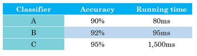

当我们的系统达到了90%的准确率时，觉得还是不够好，我们有很多想法去改善我们的系统，比如，去收集更多的训练数据，收集更多不同姿势图片丰富样本的多样性，或者更多的反例集。或者再用梯度下降训练算法，训练久一点。或者尝试用一个完全不同的优化算法，比如Adam优化算法。或者尝试使用规模更大或者更小的神经网络。或者试试dropout或者L2正则化。或者想要修改网络的架构，比如修改激活函数，改变隐藏单元的数目之类的方法。
如何选择更好的方法而不是浪费时间，这里记录下一些策略。
单一评估指标
percision：查准率
被你的分类器中标记为真的例子中，有多少真的为真
recall：查全率
对于所有为真的例子，有多少被识别出来
查准率和查全率之间往往需要折衷，两个指标都要顾及到，用F1分数可以更好的衡量系统的优劣
$F_1 = \frac{2}{\frac{1}{P} + \frac{1}{R}}$在数学中，这个函数叫做查准率P和查全率R的调和平均数
满足和优化指标
除了F1分数或者其它衡量准确度的指标外，我们还要考虑运行时间，就是需要多长时间来分类一张图。A分类器需要80毫秒，B需要95毫秒，C需要1500毫秒，就是说需要1.5秒来分类图像。

如何选取上图中的分类器，可以这样判断一下代价
cost = accuracy - 0.5 × running time
这个方法可能太过刻意，当然在具体情况具体考虑。
训练/开发/测试集合
设立训练集，开发集和测试集的方式大大影响了建立机器学习应用方面取得进展的速度。所以，我们希望最终应用的目标数据是和训练集合来自同一处。比如，我们想要做手机摄像头识别猫，训练集最好来自手机拍摄的图片而不是在网上爬取的很清晰的图片或者卡通猫之类。
开发集和测试集的大小
如果你总共有100个样本，这样70/30或者60/20/20分的经验法则是相当合理的。如果你有几千个样本或者有一万个样本，这些做法也还是合理的。
但在现代机器学习中，我们更习惯操作规模大得多的数据集，比如说你有1百万个训练样本，这样分可能更合理，98%作为训练集，1%开发集，1%测试集。
错误率指标
$Error = \frac{1}{\sum_{}^{}w^{(i)}}\sum_{i = 1}^{m_{{dev}}}{w^{(i)}I\{ y_{{pred}}^{(i)} \neq y^{(i)}\}}$可避免偏差
我们使用猫分类器来做例子，比如人类具有近乎完美的准确度，所以人类水平的错误是1%。在这种情况下，如果我们的学习算法达到8%的训练错误率和10%的开发错误率，你的算法在训练集上的表现和人类水平的表现有很大差距的话，说明你的算法对训练集的拟合并不好。所以从减少偏差和方差的工具这个角度看，在这种情况下，我会把重点放在减少偏差上。需要做的是，比如说训练更大的神经网络，或者跑久一点梯度下降，就试试能不能在训练集上做得更好。
进行误差分析
进行错误分析，应该找一组错误样本，可能在你的开发集里或者测试集里，观察错误标记的样本，看看假阳性（false positives）和假阴性（false negatives），统计属于不同错误类型的错误数量。在这个过程中，可能会得到启发，归纳出新的错误类型。如果过了一遍错误样本，然后说，天，有这么多Instagram滤镜或Snapchat滤镜，这些滤镜干扰了我的分类器，你就可以在途中新建一个错误类型。总之，通过统计不同错误标记类型占总数的百分比，可以帮发现哪些问题需要优先解决，或者构思新优化方向的灵感。
检查是否有错误的标记，当我们的数据量较少时，应该检查下是否有错误的标记。
迁移学习
迁移学习最有用的场合是，如果你尝试优化任务B的性能，通常这个任务数据相对较少，例如，在放射科中你知道很难收集很多X射线扫描图来搭建一个性能良好的放射科诊断系统，所以在这种情况下，你可能会找一个相关但不同的任务，如图像识别，其中你可能用1百万张图片训练过了，并从中学到很多低层次特征，所以那也许能帮助网络在任务B在放射科任务上做得更好，尽管任务B没有这么多数据。迁移学习什么时候是有意义的？它确实可以显著提高你的学习任务的性能，但任务A实际上数据量比任务B要少，这种情况下增益可能不多。
多任务学习
在多任务学习中，是同时开始学习的，试图让单个神经网络同时做几件事情，然后希望这里每个任务都能帮到其他所有任务。
多任务学习能让你训练一个神经网络来执行许多任务，这可以给你更高的性能，比单独完成各个任务更高的性能。但要注意，实际上迁移学习比多任务学习使用频率更高。我看到很多任务都是，如果你想解决一个机器学习问题，但你的数据集相对较小，那么迁移学习真的能帮到你，就是如果你找到一个相关问题，其中数据量要大得多，你就能以它为基础训练你的神经网络，然后迁移到这个数据量很少的任务上来。
端到端的深度学习
简而言之，以前有一些数据处理系统或者学习系统，它们需要多个阶段的处理。那么端到端深度学习就是忽略所有这些不同的阶段，用单个神经网络代替它。
我们来看一些例子，以语音识别为例，你的目标是输入，比如说一段音频，然后把它映射到一个输出，就是这段音频的听写文本。所以传统上，语音识别需要很多阶段的处理。首先你会提取一些特征，一些手工设计的音频特征，也许你听过MFCC，这种算法是用来从音频中提取一组特定的人工设计的特征。在提取出一些低层次特征之后，你可以应用机器学习算法在音频片段中找到音位，所以音位是声音的基本单位，比如说“Cat”这个词是三个音节构成的，Cu-、Ah-和Tu-，算法就把这三个音位提取出来，然后你将音位串在一起构成独立的词，然后你将词串起来构成音频片段的听写文本。
所以和这种有很多阶段的流水线相比，端到端深度学习做的是，你训练一个巨大的神经网络，输入就是一段音频，输出直接是听写文本。AI的其中一个有趣的社会学效应是，随着端到端深度学习系统表现开始更好，有一些花了大量时间或者整个事业生涯设计出流水线各个步骤的研究员，还有其他领域的研究员，不只是语言识别领域的，也许是计算机视觉，还有其他领域，他们花了大量的时间，写了很多论文，有些甚至整个职业生涯的一大部分都投入到开发这个流水线的功能或者其他构件上去了。而端到端深度学习就只需要把训练集拿过来，直接学到了和之间的函数映射，直接绕过了其中很多步骤。对一些学科里的人来说，这点相当难以接受，他们无法接受这样构建AI系统，因为有些情况，端到端方法完全取代了旧系统，某些投入了多年研究的中间组件也许已经过时了。
事实证明，端到端深度学习的挑战之一是，你可能需要大量数据才能让系统表现良好，比如，你只有3000小时数据去训练你的语音识别系统，那么传统的流水线效果真的很好。但当你拥有非常大的数据集时，比如10,000小时数据或者100,000小时数据，这样端到端方法突然开始很厉害了。所以当你的数据集较小的时候，传统流水线方法其实效果也不错，通常做得更好。你需要大数据集才能让端到端方法真正发出耀眼光芒。如果你的数据量适中，那么也可以用中间件方法，你可能输入还是音频，然后绕过特征提取，直接尝试从神经网络输出音位，然后也可以在其他阶段用，所以这是往端到端学习迈出的一小步，但还没有到那里。
另一个例子，比如说你希望观察一个孩子手部的X光照片，并估计一个孩子的年龄。
处理这个例子的一个非端到端方法，就是照一张图，然后分割出每一块骨头，所以就是分辨出那段骨头应该在哪里，那段骨头在哪里，那段骨头在哪里，等等。然后，知道不同骨骼的长度，你可以去查表，查到儿童手中骨头的平均长度，然后用它来估计孩子的年龄，所以这种方法实际上很好。
相比之下，如果你直接从图像去判断孩子的年龄，那么你需要大量的数据去直接训练。据我所知，这种做法今天还是不行的，因为没有足够的数据来用端到端的方式来训练这个任务。
你可以想象一下如何将这个问题分解成两个步骤，第一步是一个比较简单的问题，也许你不需要那么多数据，也许你不需要许多X射线图像来切分骨骼。而任务二，收集儿童手部的骨头长度的统计数据，你不需要太多数据也能做出相当准确的估计，所以这个多步方法看起来很有希望，也许比端对端方法更有希望，至少直到你能获得更多端到端学习的数据之前。
所以端到端深度学习系统是可行的，它表现可以很好，也可以简化系统架构，让你不需要搭建那么多手工设计的单独组件。
是否要使用端到端的深度学习
应用端到端学习的一些好处，首先端到端学习真的只是让数据说话。所以如果你有足够多的数据，那么不管从x到y最适合的函数映射是什么，如果你训练一个足够大的神经网络，希望这个神经网络能自己搞清楚，而使用纯机器学习方法，直接从到输入去训练的神经网络，可能更能够捕获数据中的任何统计信息，而不是被迫引入人类的成见。
例如，在语音识别领域，早期的识别系统有这个音位概念，就是基本的声音单元，如cat单词的“cat”的Cu-、Ah-和Tu-，我觉得这个音位是人类语言学家生造出来的，我实际上认为音位其实是语音学家的幻想，用音位描述语言也还算合理。但是不要强迫你的学习算法以音位为单位思考，这点有时没那么明显。如果你让你的学习算法学习它想学习的任意表示方式，而不是强迫你的学习算法使用音位作为表示方式，那么其整体表现可能会更好。
端到端深度学习的第二个好处就是这样，所需手工设计的组件更少，所以这也许能够简化你的设计工作流程，你不需要花太多时间去手工设计功能，手工设计这些中间表示方式。
这里有一些缺点，首先，它可能需要大量的数据。要直接学到这个到的映射。
另一个缺点是，它排除了可能有用的手工设计组件。如果你没有很多数据，你的学习算法就没办法从很小的训练集数据中获得洞察力。当你有大量数据时，手工设计的东西就不太重要了，但是当你没有太多的数据时，构造一个精心设计的系统，实际上可以将人类对这个问题的很多认识直接注入到问题里，进入算法里应该挺有帮助的。
所以端到端深度学习的弊端之一是它把可能有用的人工设计的组件排除在外了，精心设计的人工组件可能非常有用，但它们也有可能真的伤害到你的算法表现。例如，强制你的算法以音位为单位思考，也许让算法自己找到更好的表示方法更好。所以这是一把双刃剑，可能有坏处，可能有好处，但往往好处更多，手工设计的组件往往在训练集更小的时候帮助更大。